Staatlich geprüfter Restaurator · Niederbayern · seit 2014
Wo Tradition auf Qualität und neueste Technologien trifft.
Spezialisierte restauratorische Arbeiten im Denkmalschutz – von Beratung, Gutachten und Befunduntersuchung über das Konzept bis zur Ausführung. Über 60 restaurierte Objekte in Bayern und darüber hinaus.
Unsere Werkstatt ist auf die Restaurierung von Baudenkmälern, historischen Objekten und Kunstwerken spezialisiert. Jeder Fachbereich wird von diplomierten Restauratoren geleitet – Befund, Konzept und Ausführung kommen aus einer Hand.
Wir beraten Bauherren, Architekten und Denkmalbehörden und erstellen Gutachten und Expertisen zu historischen Bauten – auf höchstem fachlichem Niveau.
Ein Schlüsselaspekt unserer Arbeit ist die Treue zu den ursprünglichen Bauweisen und Materialien. Unsere Methoden entsprechen dem aktuellen Stand der Konservierungswissenschaft – abgestimmt mit dem Bayerischen Landesamt für Denkmalpflege, Architekten und Bauherren.
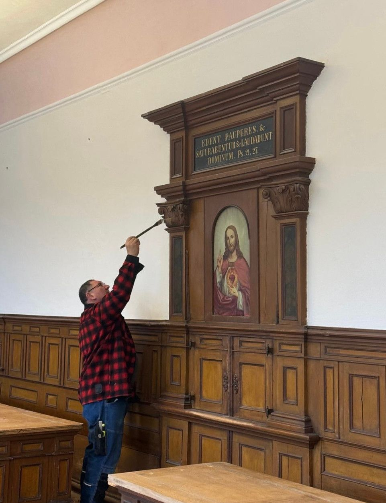
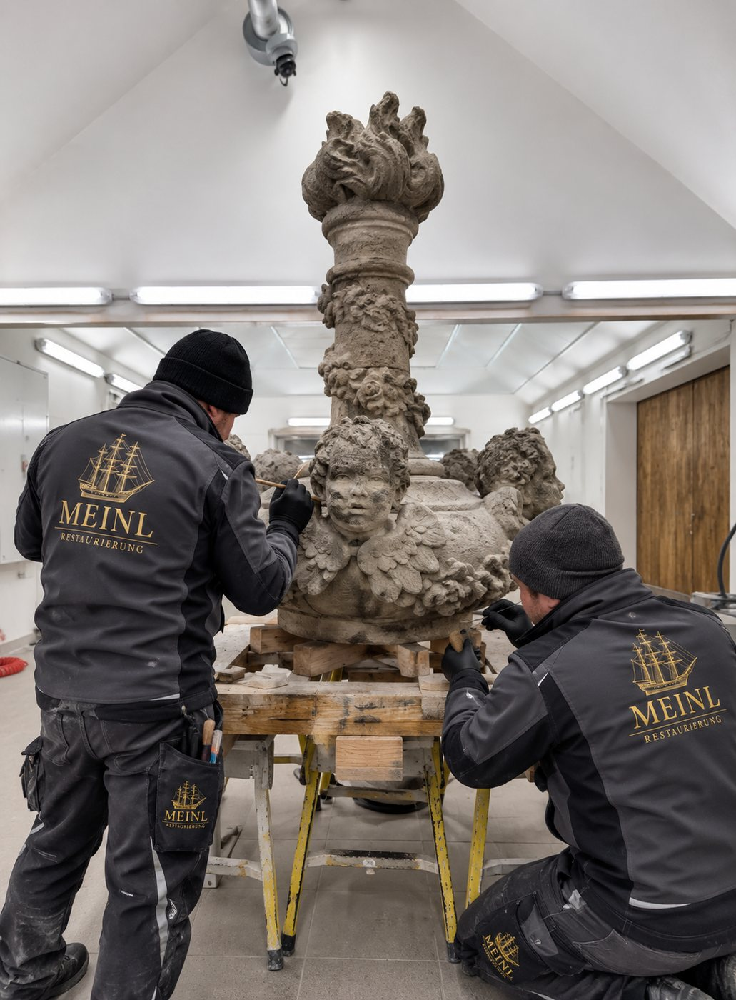
Werkstatt Hausen-Großmuß
Eigene Werkstatt für Stein, Holz, Metall und Fassung.
Transportfähige Objekte – Skulpturen, Epitaphien, Altarteile, Gemälde und Ausstattungsstücke – restaurieren wir im eigenen Werkstattgebäude: mit Laser, Mikroskop und ruhigen Arbeitsbedingungen, unabhängig von Witterung und Baustellenbetrieb.
Was vor Ort bleiben muss, restaurieren wir auf der Baustelle – mit derselben Sorgfalt und derselben Mannschaft.
Wir bieten spezialisierte restauratorische Arbeiten im Denkmalschutz – keine klassischen Bauleistungen.
Grundlage jedes Projekts
Beratung, Gutachten & Expertisen
Fachliche Beratung von Bauherren, Architekten und Denkmalbehörden. Befunduntersuchung, Stratigraphie und Materialanalyse am Objekt; restauratorische Gutachten, Expertisen und Konzepte zu historischen Bauten – auf höchstem Niveau, als Grundlage für Ausschreibung und Genehmigung.
Fassung
Wand- und Deckenmalerei
Freilegung, Sicherung, Festigung und Retusche historischer Wand- und Deckenfassungen – vom Mittelalter bis zum Historismus.
Oberfläche
Stuck und Putz
Kalkputze, Stuckergänzungen und Fassungsrekonstruktion nach Befund. Denkmalgerechte Instandsetzung von Fassaden und Innenräumen.
Naturstein
Steinrestaurierung
Reinigung, Entsalzung, Festigung und Ergänzung von Natursteinelementen – Fassaden, Portale, Epitaphien und Skulpturen.
Holz · Stein · Fassung
Gefasste und ungefasste Skulpturen
Konservierung und Restaurierung von Bildwerken aus Holz und Stein, einschließlich Fassungen, Vergoldungen und Rekonstruktionen.
Leinwand · Tafel
Gemälde
Firnisabnahme, Doublierung, Kittung und Retusche von Leinwand- und Tafelgemälden – nach Untersuchung und dokumentiertem Konzept.
Grafik · Urkunden · Bücher
Papierrestaurierung
Trockenreinigung, Wässerung, Ergänzung und konservatorische Verpackung von Grafik, Archivalien und Büchern.
Metall
Eisenelemente und Waffen
Schmiedeeisen, Beschläge und historische Waffen: Entrostung, Konservierung und Ergänzung – auch mittels Plasmaschweißen.
Sakralraum
Kirchenmalerarbeiten
Farbfassungen, Vergoldungen und Anstriche im Kirchenraum, ausgeführt nach Befund und in Abstimmung mit der Denkmalpflege.
Rekonstruktion
Bildhauer- und Schreinerarbeiten
Ergänzung und Nachbau in Holz und Stein: historische Türen, Böden, Decken und Altaraufbauten – aus Altholz und mit historischen Verbindungen.
Berührungslos
Laserreinigung
Materialschonende Reinigung von Stein, Metall und gefassten Oberflächen – präzise, ohne Abrasion und ohne Chemie.
Nachweis
Dokumentation
Fotodokumentation, Kartierung, Bautagesberichte und Abschlussbericht – nachvollziehbar für Bauherr, Denkmalpflege und die nächste Generation.
Vorgehen
Vom Befund zur Ausführung.
I
Befund
Untersuchung am Objekt, Probenentnahme, Stratigraphie, mikroskopische und chemische Analyse von Putzen, Pigmenten und Bindemitteln.
II
Konzept
Restauratorisches Konzept und Materialkonzept, abgestimmt mit Landesamt für Denkmalpflege, Architekt und Bauherr – als belastbare Grundlage für Vergabe und Genehmigung.
III
Ausführung
Musterflächen zur Freigabe, Ausführung durch diplomierte Restauratoren, laufende Bautagesberichte und Abstimmung auf der Baustelle.
IV
Dokumentation
Fotodokumentation, Kartierung und Abschlussbericht: Jeder Eingriff bleibt nachvollziehbar und reversibel dokumentiert.
Referenzen
Ausgewählte Projekte.
Schlösser, Klöster, Kirchen und Rathäuser – seit 2014 haben wir mehr als 60 Objekten ihr ursprüngliches Erscheinungsbild zurückgegeben.
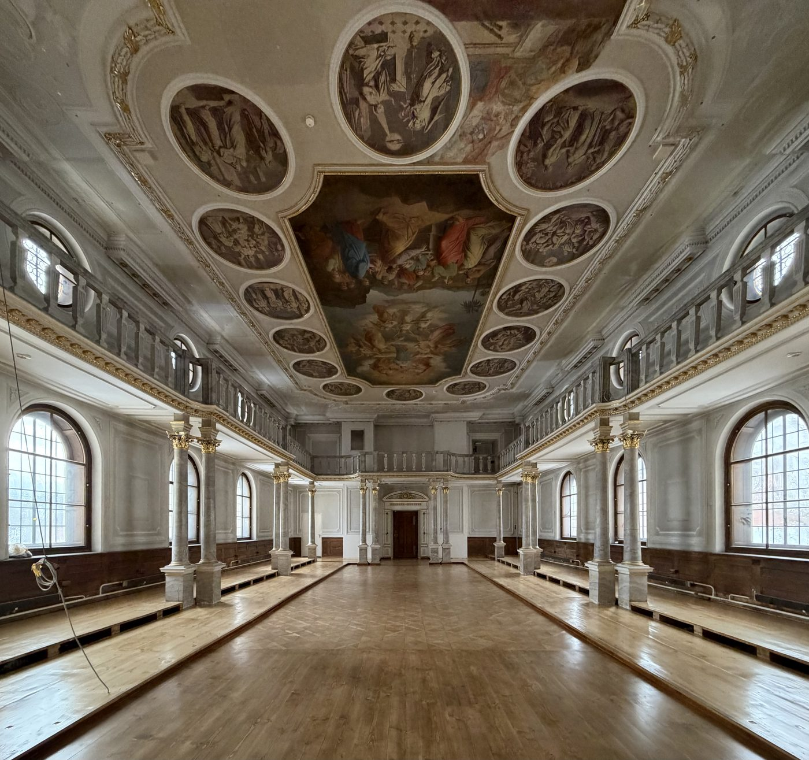
Kammeltal · Kloster · Altar & Türen
Kloster Wettenhausen
Rekonstruktion eines historischen Altars und Restaurierung der historischen Türen der Klausur.
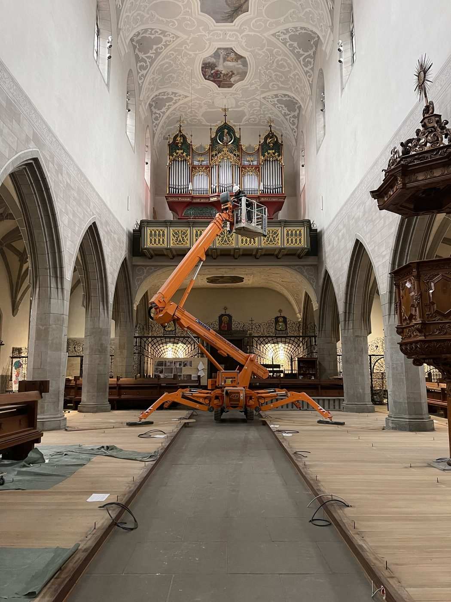
Radolfzell am Bodensee · Münster · Kirchenraum
Münster Radolfzell
Restauratorische Arbeiten im Kirchenraum des Münsters Unserer Lieben Frau – Gewölbe, Decken und historische Ausstattung.
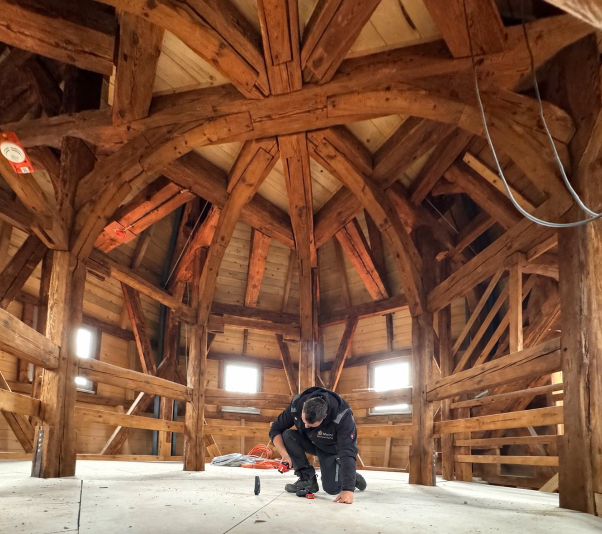
Bamberg · Stadt Bamberg · Holzrestaurierung
Schloss Geyerswörth
Holzrestauratorische Arbeiten an Böden und Decken; restauratorisches Konzept für die historische Bohlen-Bretter-Decke mit Befund einer bauzeitlichen grünen Fassung.
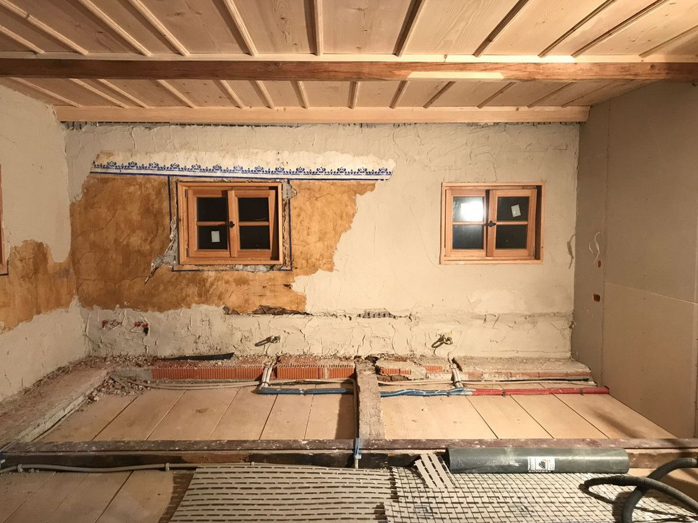
Bayerischer Wald · Wohnhaus · Instandsetzung
Historisches Wohnhaus im Bayerischen Wald
Denkmalgerechte Instandsetzung eines historischen Wohnhauses: Sicherung der Bausubstanz, Kalkputze nach Befund und Erhalt der historischen Holzbauteile.
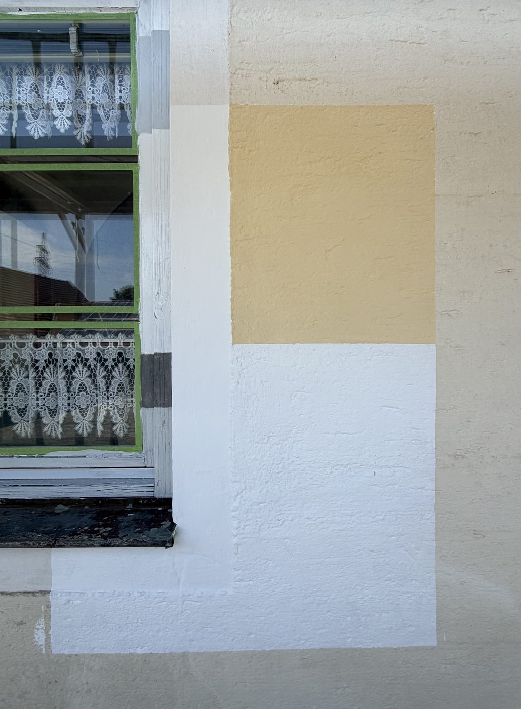
Bogen · Baudenkmal D-2-78-118-62 · Fassade
Klosterökonomie Freundorf
Restauratorisches Fachgutachten zur Fassade der ehemaligen Benediktiner-Klosterökonomie mit Farbbefund und Musterflächen in Kalk- und Silikattechnik.
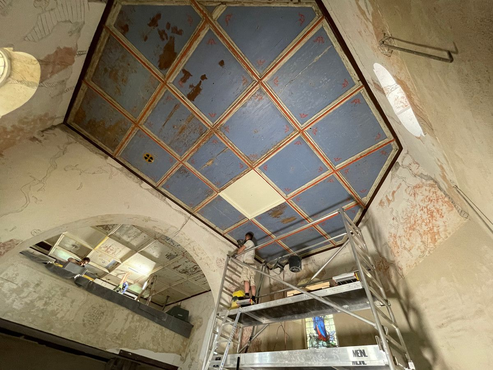
Arnbruck · Bayerischer Wald · Kirchendecke
Pfarrkirche Arnbruck
Restaurierung der hölzernen Kirchendecke: Sicherung, Reinigung und Retusche der historischen Fassung im Kirchenraum.
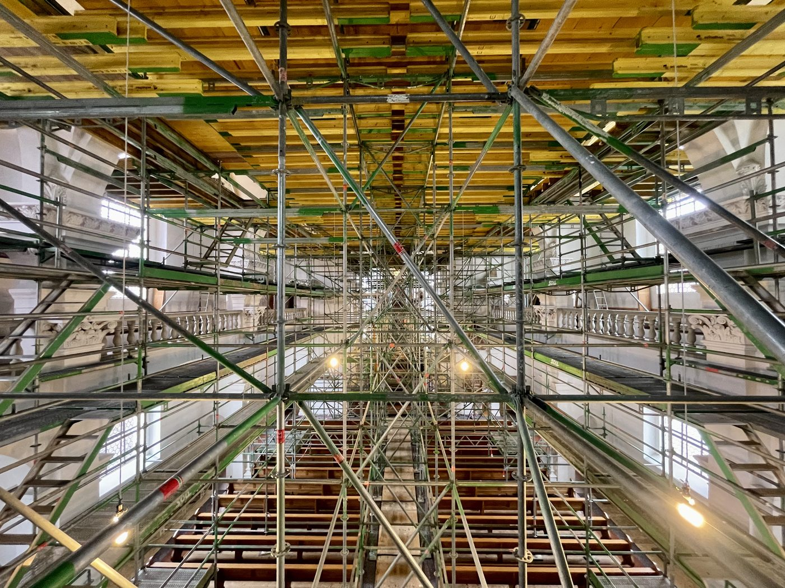
Tannheim · Kirche · Kirchenraum
Kirche Tannheim
Restaurierung im Kirchenraum: Arbeiten an Decke und Wandflächen vom Vollgerüst aus – Sicherung, Reinigung und Retusche der historischen Fassung.
60+weitere Objekte seit 2014 – Kirchen, Klöster, Schlösser, Bürgerhäuser und Sammlungsobjekte.Galerie auf Instagram
Technologie
Modernste Verfahren im Dienst des Originals.
Bei unseren Projekten setzen wir die modernsten Technologien ein, die derzeit in der Denkmalpflege verfügbar sind – immer dort, wo sie das Original schonen und die Substanz erhalten.
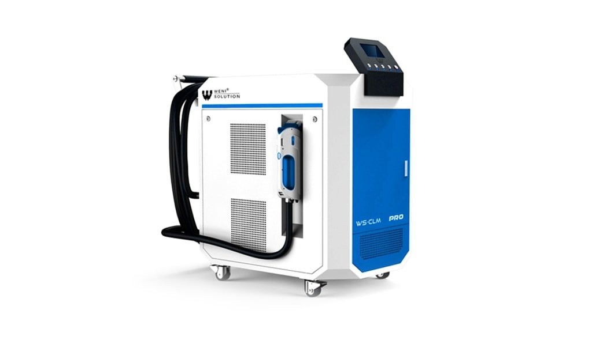
Laserreinigung
Berührungslose Abnahme von Verschmutzung und Krusten auf Stein, Metall und gefassten Oberflächen – präzise, ohne Abrasion und ohne Chemie.
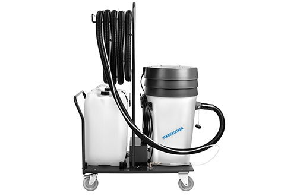
Gregomatic-Reinigung
Schonende Nass-Vakuum-Reinigung empfindlicher Oberflächen – Textil, Stein und Fassung.
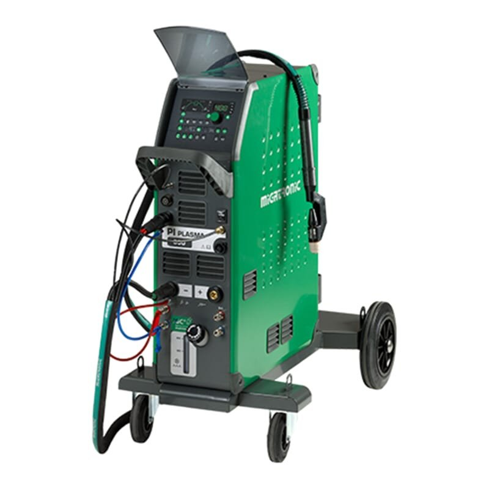
Plasmaschweißen
Feinste Ergänzungen an historischen Eisenelementen bei minimalem Wärmeeintrag.
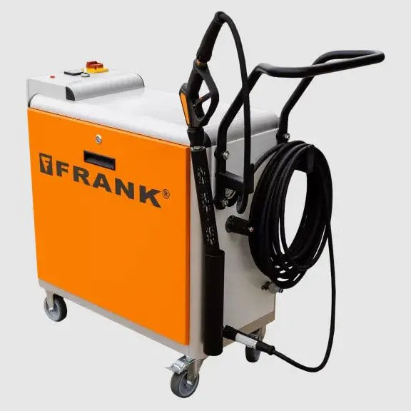
Hochdruckwasser & Dampf
Kontrollierte Reinigung von Fassaden und Naturstein mit exakt dosiertem Druck und Temperatur.
Drohnenaufnahmen
Bauaufnahme und Schadenskartierung aus der Luft: Dächer, Fassaden und Türme – hochauflösend dokumentiert, ohne Gerüst.
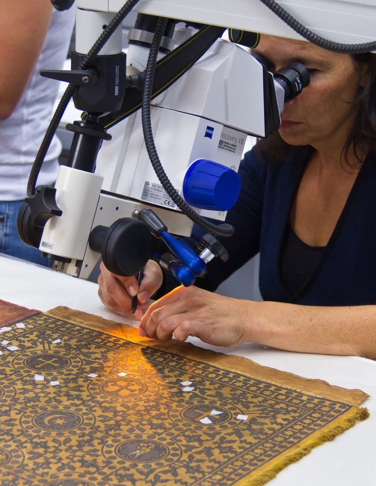
Mikroskopie & Pigmentanalyse
Stratigraphische und chemische Untersuchung von Fassungen, Putzen und Bindemitteln.
Über uns
Dipl.-Rest. Milan Meinl M.A.
Staatlich geprüfter Restaurator und ordentliches Mitglied im Verband der Restauratoren (VDR). Aufgewachsen in einer Familie akademischer Maler, verbindet Milan Meinl die Genauigkeit der Konservierungswissenschaft mit dem geschulten Blick des Künstlers.
Seit 2014 führt er seine Werkstatt – heute im eigenen Werkstattgebäude in Hausen-Großmuß bei Kelheim, ausgestattet für Holz, Stein, Metall und Fassung. Wir arbeiten für Landesbehörden, Kommunen, Kirchenstiftungen, Architekten und private Bauherren in ganz Bayern.
„Wir bieten spezialisierte restauratorische Arbeiten im Denkmalschutz – keine klassischen Bauleistungen.“
Ausgewählte Berichte aus Zeitungen, Fernsehen und von Institutionen über Objekte, an denen Meinl Restaurierung gearbeitet hat – von der Klosteranlage Wettenhausen über die historische Brücke in Au in der Hallertau bis zum Radolfzeller Münster.
Kulturstaatsminister Wolfram Weimer besucht das Kloster Wettenhausen kurz vor Abschluss der mehrjährigen Sanierung – ein Rundgang durch die restaurierten Räume der Klausur.
Objekt: Klosteranlage Wettenhausen – historische Holzböden, Türen und Altar
Neubau der Brücke am Klosterberg: Die geschichtsträchtigen Säulen und der Sockel am Schlosspark werden abgetragen und – mit dem Segen des Denkmalamts – restauratorisch wieder aufgebaut.
„… wofür die Gemeinde den Auftrag an den Diplomrestaurator Milan Meinl aus Hausen-Großmuß vergeben hat.“
Objekt: Historische Brücke am Klosterberg / Schlosspark, Au in der Hallertau
Die Renovierung der Brücke über den Leitersdorfer Bach hinter der Pfarrkirche St. Vitus hat begonnen – parallel wird der Kirchplatz barrierefrei umgestaltet.
Objekt: Historische Brücke am Klosterberg, Au in der Hallertau
Diplomrestaurator Milan Meinl erläutert vor Ort das Sanierungskonzept für die Kapelle mit der „Falkensteiner Beweinung“ aus dem frühen 16. Jahrhundert.
„Wir werden für den Verputz nur Material verwenden, das aus der Gegend kommt.“
Die verlinkten Beiträge liegen bei den jeweiligen Medien; einzelne Artikel sind dort nur mit Abonnement vollständig lesbar. Weitere Berichte aus der Tagespresse stellen wir auf Anfrage gerne zur Verfügung.
Kontakt
Sprechen wir über Ihr Objekt.
Ob Voruntersuchung, Gutachten oder Ausführung – wir beraten Sie gerne vor Ort und erstellen ein Angebot auf Grundlage des Befunds.
Diese Website verwendet keine Tracking-Cookies und keine Analyse-Dienste. Schriften und Bilder werden von unserem eigenen Server geladen. Details in der Datenschutzerklärung.